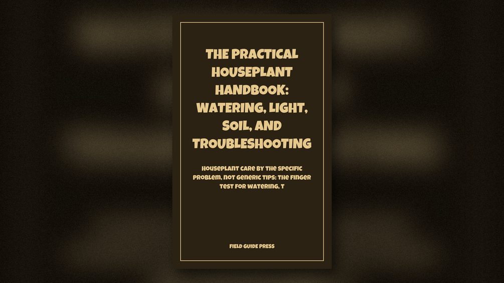

№ 09 — The Field Office
The Practical Houseplant Handbook: Watering, Light, Soil, and Troubleshooting
$3.99
Houseplant care by the specific problem, not generic tips: the finger test for watering, the shadow test for light, and how to tell root rot, spider mites, mealybugs…